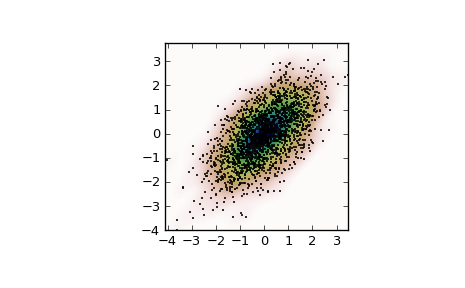

scipy.stats.gaussian_kde¶
- class scipy.stats.gaussian_kde(dataset, bw_method=None)[source]¶
Representation of a kernel-density estimate using Gaussian kernels.
Kernel density estimation is a way to estimate the probability density function (PDF) of a random variable in a non-parametric way. gaussian_kde works for both uni-variate and multi-variate data. It includes automatic bandwidth determination. The estimation works best for a unimodal distribution; bimodal or multi-modal distributions tend to be oversmoothed.
Parameters : dataset : array_like
Datapoints to estimate from. In case of univariate data this is a 1-D array, otherwise a 2-D array with shape (# of dims, # of data).
bw_method : str, scalar or callable, optional
The method used to calculate the estimator bandwidth. This can be ‘scott’, ‘silverman’, a scalar constant or a callable. If a scalar, this will be used directly as kde.factor. If a callable, it should take a gaussian_kde instance as only parameter and return a scalar. If None (default), ‘scott’ is used. See Notes for more details.
Notes
Bandwidth selection strongly influences the estimate obtained from the KDE (much more so than the actual shape of the kernel). Bandwidth selection can be done by a “rule of thumb”, by cross-validation, by “plug-in methods” or by other means; see [R218], [R219] for reviews. gaussian_kde uses a rule of thumb, the default is Scott’s Rule.
Scott’s Rule [R216], implemented as scotts_factor, is:
n**(-1./(d+4)),
with n the number of data points and d the number of dimensions. Silverman’s Rule [R217], implemented as silverman_factor, is:
n * (d + 2) / 4.)**(-1. / (d + 4)).
Good general descriptions of kernel density estimation can be found in [R216] and [R217], the mathematics for this multi-dimensional implementation can be found in [R216].
References
[R216] (1, 2, 3, 4) D.W. Scott, “Multivariate Density Estimation: Theory, Practice, and Visualization”, John Wiley & Sons, New York, Chicester, 1992. [R217] (1, 2, 3) B.W. Silverman, “Density Estimation for Statistics and Data Analysis”, Vol. 26, Monographs on Statistics and Applied Probability, Chapman and Hall, London, 1986. [R218] (1, 2) B.A. Turlach, “Bandwidth Selection in Kernel Density Estimation: A Review”, CORE and Institut de Statistique, Vol. 19, pp. 1-33, 1993. [R219] (1, 2) D.M. Bashtannyk and R.J. Hyndman, “Bandwidth selection for kernel conditional density estimation”, Computational Statistics & Data Analysis, Vol. 36, pp. 279-298, 2001. Examples
Generate some random two-dimensional data:
>>> from scipy import stats >>> def measure(n): >>> "Measurement model, return two coupled measurements." >>> m1 = np.random.normal(size=n) >>> m2 = np.random.normal(scale=0.5, size=n) >>> return m1+m2, m1-m2
>>> m1, m2 = measure(2000) >>> xmin = m1.min() >>> xmax = m1.max() >>> ymin = m2.min() >>> ymax = m2.max()
Perform a kernel density estimate on the data:
>>> X, Y = np.mgrid[xmin:xmax:100j, ymin:ymax:100j] >>> positions = np.vstack([X.ravel(), Y.ravel()]) >>> values = np.vstack([m1, m2]) >>> kernel = stats.gaussian_kde(values) >>> Z = np.reshape(kernel(positions).T, X.shape)
Plot the results:
>>> import matplotlib.pyplot as plt >>> fig = plt.figure() >>> ax = fig.add_subplot(111) >>> ax.imshow(np.rot90(Z), cmap=plt.cm.gist_earth_r, ... extent=[xmin, xmax, ymin, ymax]) >>> ax.plot(m1, m2, 'k.', markersize=2) >>> ax.set_xlim([xmin, xmax]) >>> ax.set_ylim([ymin, ymax]) >>> plt.show()
Attributes
dataset (ndarray) The dataset with which gaussian_kde was initialized. d (int) Number of dimensions. n (int) Number of datapoints. factor (float) The bandwidth factor, obtained from kde.covariance_factor, with which the covariance matrix is multiplied. covariance (ndarray) The covariance matrix of dataset, scaled by the calculated bandwidth (kde.factor). inv_cov (ndarray) The inverse of covariance. Methods
kde.evaluate(points) (ndarray) Evaluate the estimated pdf on a provided set of points. kde(points) (ndarray) Same as kde.evaluate(points) kde.integrate_gaussian(mean, cov) (float) Multiply pdf with a specified Gaussian and integrate over the whole domain. kde.integrate_box_1d(low, high) (float) Integrate pdf (1D only) between two bounds. kde.integrate_box(low_bounds, high_bounds) (float) Integrate pdf over a rectangular space between low_bounds and high_bounds. kde.integrate_kde(other_kde) (float) Integrate two kernel density estimates multiplied together. kde.resample(size=None) (ndarray) Randomly sample a dataset from the estimated pdf. kde.set_bandwidth(bw_method=’scott’) (None) Computes the bandwidth, i.e. the coefficient that multiplies the data covariance matrix to obtain the kernel covariance matrix. .. versionadded:: 0.11.0 kde.covariance_factor (float) Computes the coefficient (kde.factor) that multiplies the data covariance matrix to obtain the kernel covariance matrix. The default is scotts_factor. A subclass can overwrite this method to provide a different method, or set it through a call to kde.set_bandwidth.